Texto, voz, foto ou vídeo. A primeira linha é a resposta; a fonte vem sempre embaixo.
Telemetria com hora, manutenção com Executado, documentos, abastecimento, diário e equipe.
SOS em todas as telas: canal 16, homem ao mar, incêndio, EPIRB. Abre offline e sem senha.
Nada inventado. Sem fonte → SEM DADOS. Sensor ausente → SEM LEITURA.
Emergência acima de tudo. Resposta e voz completas, sem concisão.
Registro só cresce. Diário e Executado criam linha nova; nada se apaga.
Leituras do coletor, agenda de manutenção, documentos, diário, abastecimentos e guias de bordo. MMSI 710123456.
Fabricante/modelo e registro do barco, modelos dos equipamentos, Seafire e EPIRB, indicativo, rotas.
MAYDAY, PAN-PAN e homem ao mar: procedimento padrão — confirmar com o protocolo de bordo.
Web · 1440 × 900 — painel completo, trilho de 9 seções, faixa de leitura.
App · 390 × 844 — chat em evidência, barra do assistente em toda tela, SOS embaixo.
O endereço detecta o aparelho. ?v=web · ?v=app fixam; ?v=lista mostra todas as telas.
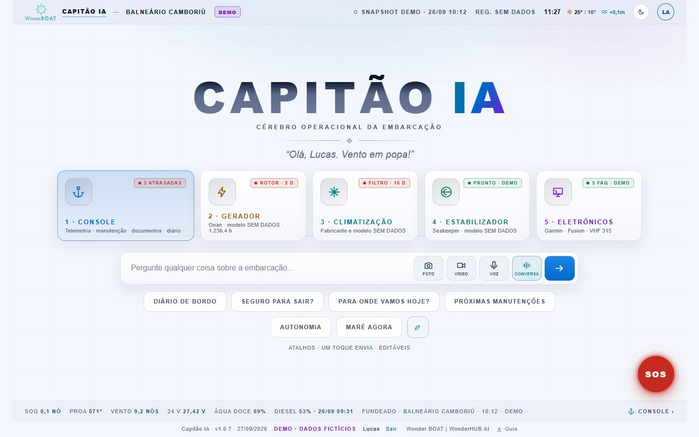
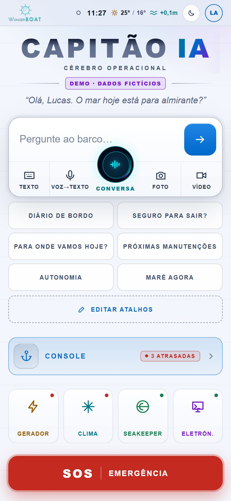
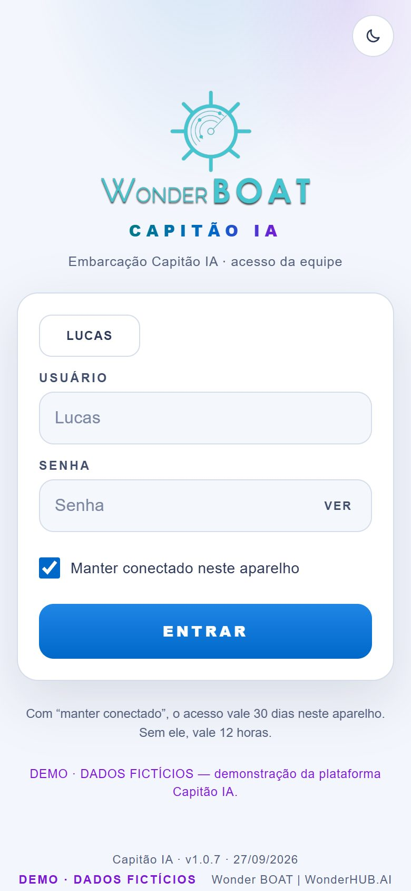
Limite declarado: é porta de entrada, não proteção real — o site é público. Proteção de verdade: login no servidor.
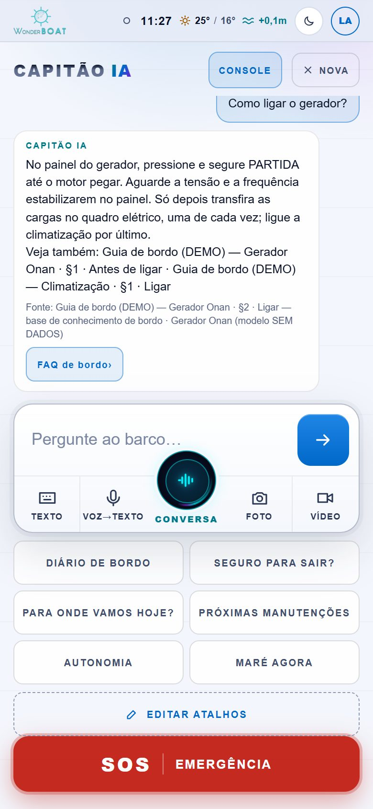
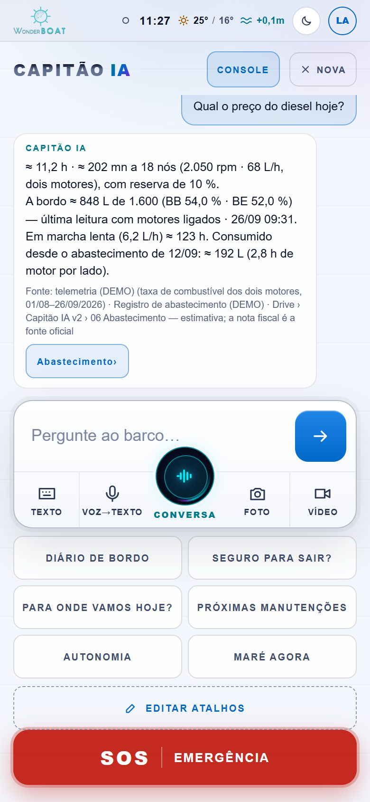
"Registre no diário…" grava uma linha nova. Pergunta nunca vira registro.
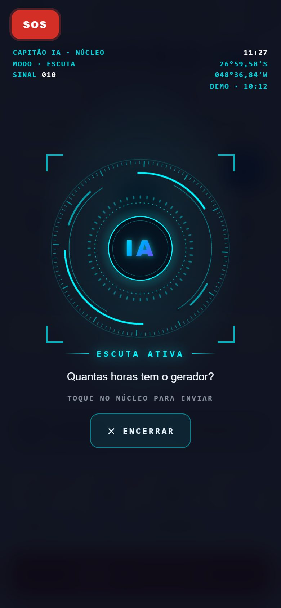
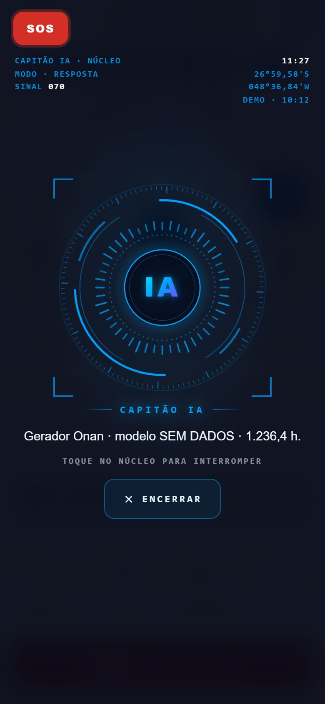
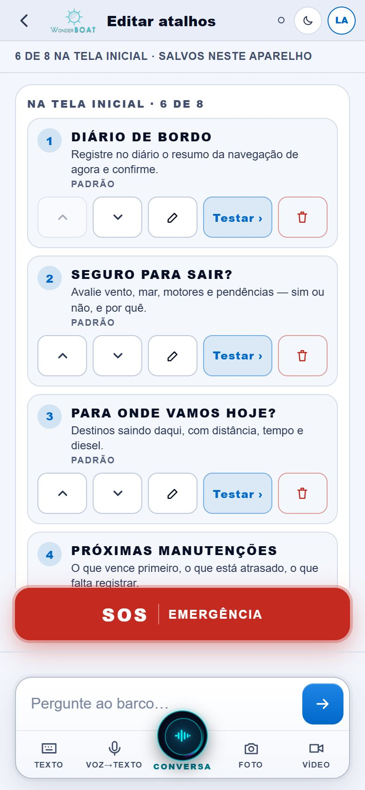
Padrão (6): DIÁRIO DE BORDO · SEGURO PARA SAIR? · PARA ONDE VAMOS HOJE? · PRÓXIMAS MANUTENÇÕES · AUTONOMIA · MARÉ AGORA.
Banco (12): CLIMA · CANAL 16 · CHECKLIST DE SAÍDA · CONSUMO · TANQUES · CONTATOS · ANOMALIAS ABERTAS · PORÃO · GERADOR · POSIÇÃO AGORA · DOCUMENTOS VENCENDO · HORÍMETROS.
Reordenar, renomear, criar e restaurar — até 8 na tela, salvos só neste aparelho. Fixos: SOS, os 5 botões do início e a barra do assistente.
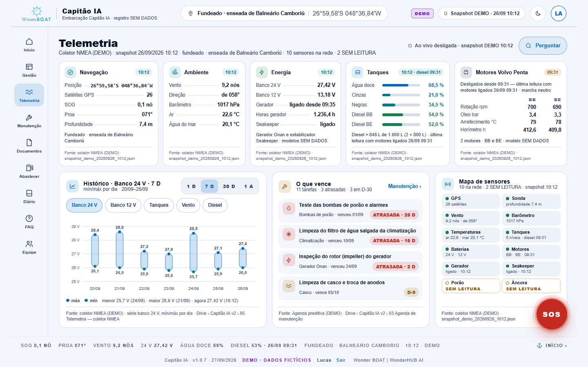
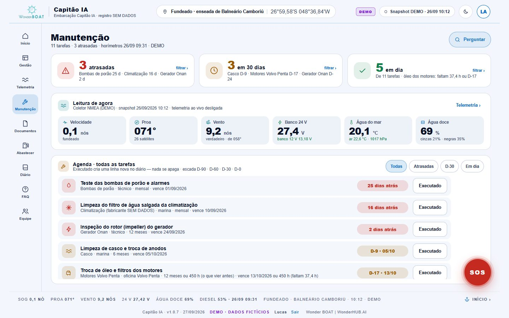
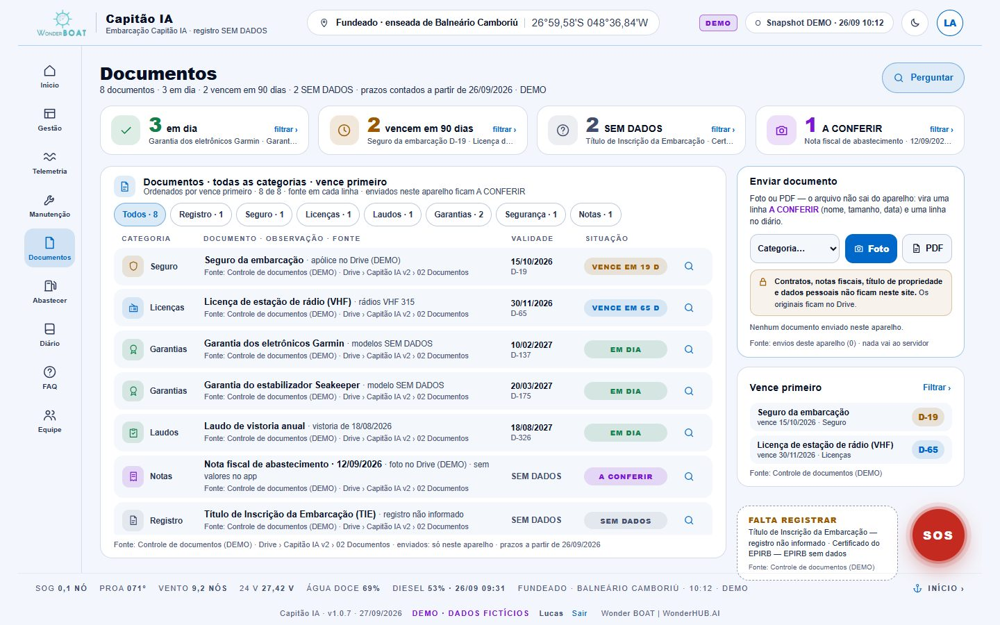
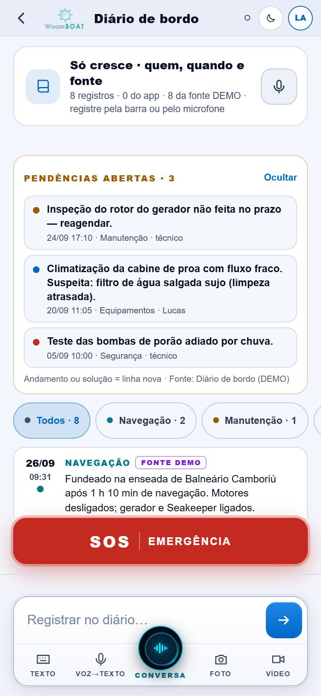
Quem, quando e fonte em cada linha. Texto, voz ou pela barra do assistente. Correção é linha nova. Pendências abertas em destaque.
Perfis e acessos (total · leitura). Convite sai por WhatsApp ou e-mail do aparelho e fica PENDENTE. Telefones de apoio ficam só neste aparelho — o SOS usa marina e técnico.
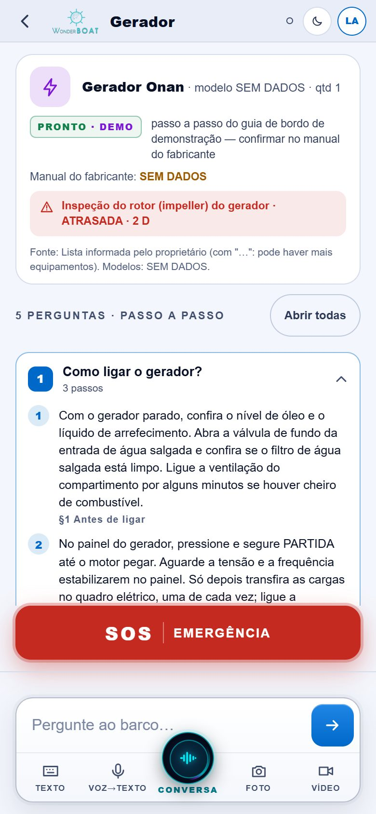
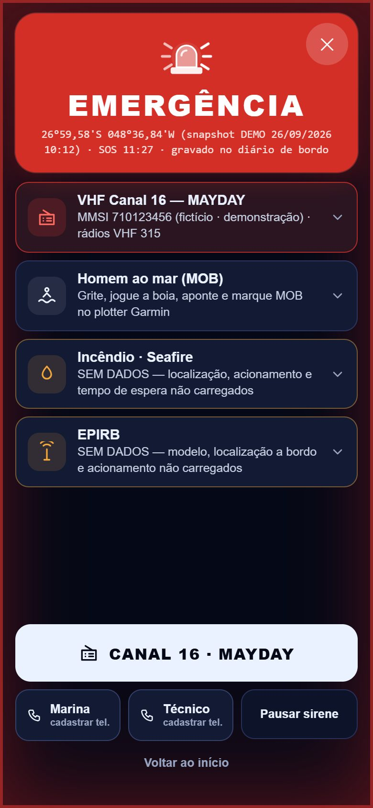
Procedimento padrão — confirmar com o protocolo de bordo.
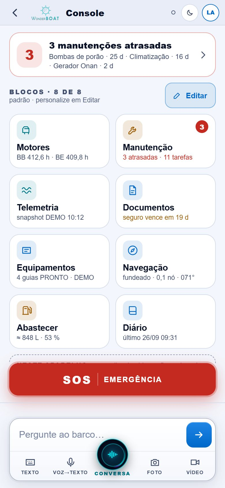
Fontes divergentes: manual oficial › registro oficial › laudo › diário › foto › nota informal.
Regra: chave só no Worker · ORIGENS + CHAVE_APP (X-Capitao-Chave) + freio por IP · app com URL_PROXY = '' cai no dado local em erro, demora ou sem internet.
Ordem: login no servidor → conta de serviço Google → telemetria ao vivo → IA → documentos sensíveis → voz em nuvem.
Dados reais no Drive: manuais dos fabricantes, agenda, documentos, diário — com a fonte de cada um.
Protocolo de bordo: MMSI e indicativo do registro, Seafire e EPIRB.
Modelos de motores, gerador, estabilizador, climatização e eletrônicos.
Posição de referência da marina (hoje, o centro de Balneário Camboriú).
Login no servidor (Cloudflare Access) e, depois, telemetria ao vivo e documentos sensíveis.
Ícones validados da marca (o app já está em v2.capitaoia.com.br).